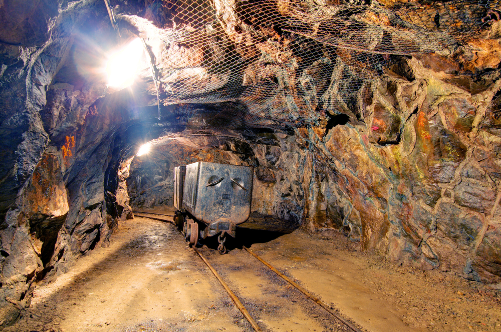
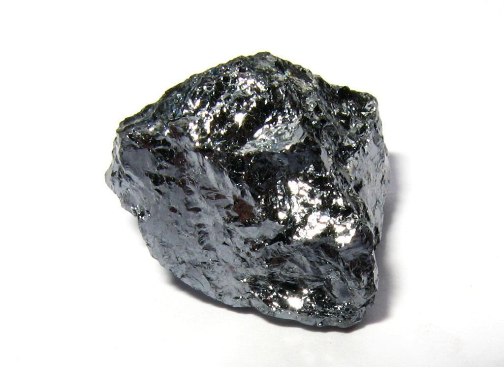
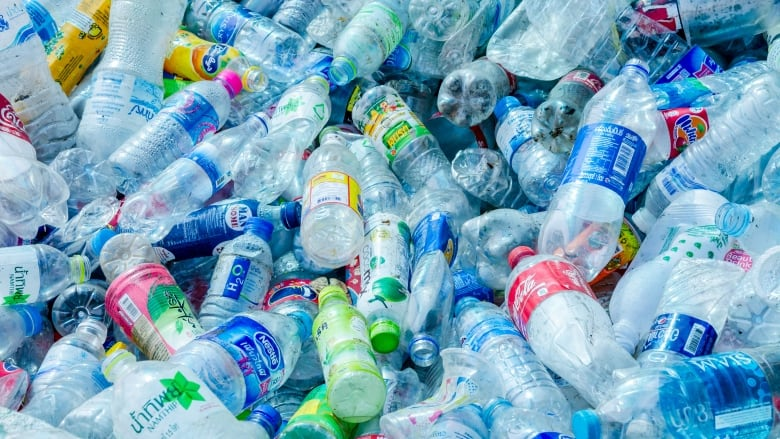
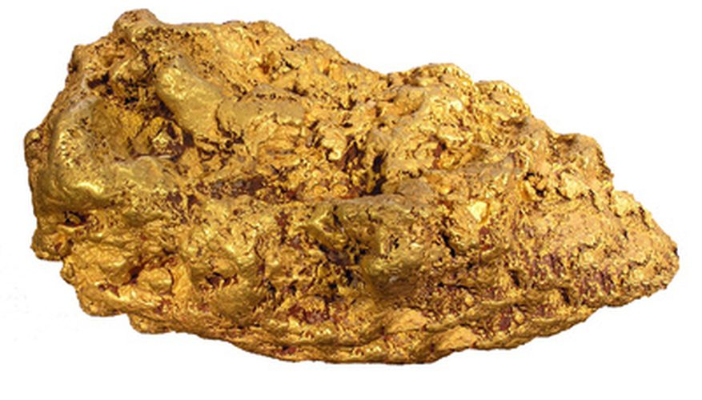
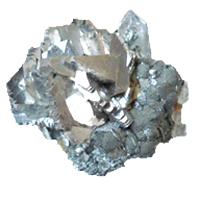
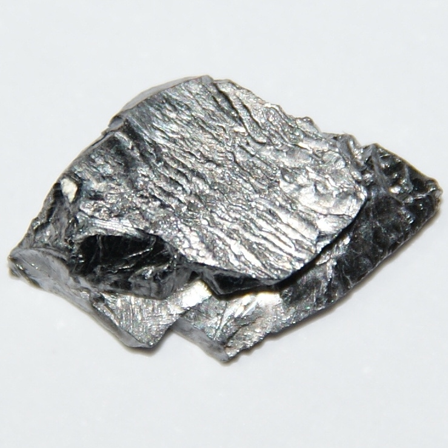
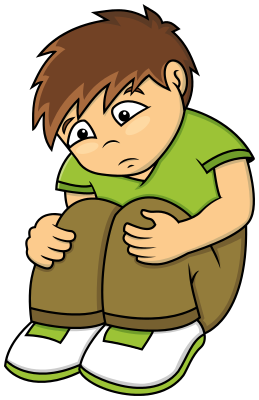
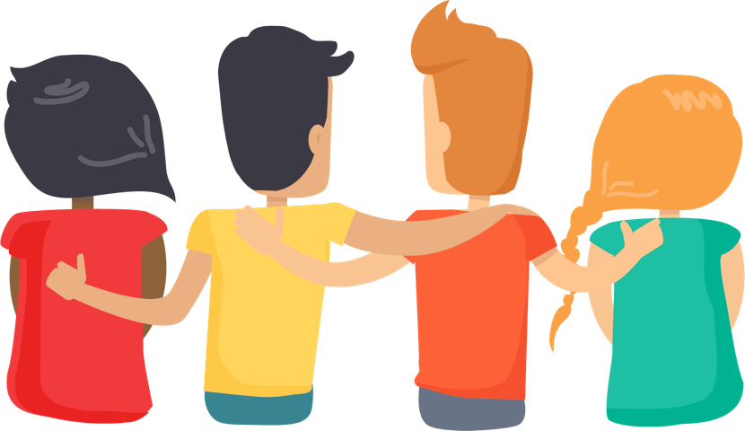

Toys-to-life er er en type videospill hvor spillet lar spillerene bruke ekte leketøysfigurer i selve videospillene. I slike spill vil som regel selve spillet komme med en skanner som lar spillerene skanne inn forskjellige leketøysfigurer gjennom en innebygd elektronikk.
Leketøyfigurene påvirker spillet på forskjellige måter. I noen spill vil leketøyene gi deg nye krefter, eller gjøre kreftene du allerede har sterkere. I noen tilfeller vil du få tilgang til helt nye karakterer du ellers ikke ville hatt tilgang til. Dette kan for mange føre til at man klarer å utføre oppgaver i spillene man ellers ikke ville klart uten. Noen ganger vil enkelte oppgaver være umulige å utføre uten enkelte leketøysfigurer. Dette fører til at man i enkelte tilfeller er nødt til å oppsøke leketøysbutikker eller videospillbutikker hvor leketøyene selges for å kunne utføre alle oppgavene i spillet.
For å spille toys-to-life spill trenger man en type spillkonsoll, en plattform eller portal som skanner spillfigurer og spillfigurene selv. Spillfigurene og skanneren er som regel laget av mikrochipper og plast. Spillkonsoller inneholder mange forskjellige avanserte elektroniske komponenter. Skanneren inneholder en NFC-leser og spillfigurene inneholder en NFC-tag.
Det er lett å tenke at det å bygge en toys-to-life figur kan være det samme som å bygge en legofigur. Men toys-to-life figurer inneholder noen spesielle materialer for at den kan brukes i spillet. Det å grave ut og lage disse materialene kan skade kloden.
Hva slags materialer trenger man for å kunne spille toys-to-life videospill?
Toys-to-life videospill trenger strøm for at man kan spille. Uten strøm fungerer ikke TVen, mobilen, internett eller datamaskinen. Både toys-to-life figurene og spillportalen blir kalt for elektronikk fordi de kan føre strøm. For at man skal spille toys-to-life videospill er det viktig at mange av byggesteinene i spillportalen og toys-to-life figurene kan sende strøm rundt. I toys-to-life figurene er det bare en liten bit av figuren som sender strøm, og det er denne lille biten som gjør at figuren kan brukes i spillet og ikke bare er en vanlig leke.
Byggesteinene av denne biten heter metaller. Det finnes mange ulike typer metaller som gjør forskjellige oppgaver i toys-to-life figuren. Disse metallene har ulike navn, og noen av de som er i figurene heter silisium, kobber, gull og tantalum.
Gruvedrift og smelteverk
For å ta materialet som man lager elektronikk med opp av jorda trenger man gruvedrift. Metallet sitter som oftest fast i steiner når det tas opp, og for å få steinen og metallet fra hverandre må det tas til smelteverk.
Det er som regel lettere å separere metallet fra steinen etter at det er tatt opp av jorda, enn det er å ta kun metallet ut av jorda. Det som skjer da er at man tar opp mange andre stoffer man ikke er interesserte i samtidig. Noen av disse materialene kan være giftige og blir ofte etterlatt ute i naturen. Av og til kan disse materialene komme i kontakt med elver og dammer noe som kan gjøre at mennesker blir syke når de drikker det.
Når metallene kommer til smelteverkene brukes det flamme til å smelte det ned til klumper som senere kan formes til det man ønsker. Dette produserer vanligvis giftig røyk som blir sluppet rett ut i lufta. Denne røyken er skadelig på flere måter. Den kan forsterke den globale oppvarmingen, føre til giftig regn og luft som ikke er mulig å puste for mennesker.
I tillegg til å skade miljøet kan gruvedrift og smelteverk være skadelig for mennesker. Menneskene som graver metallene opp fra jorda får ofte rygg- og leddskader. Hørselsskader er også vanlig. Under bakken under utgraving kan en komme i kontakt med giftige gasser. Noen av disse gassene er eksplosive og kan selvantenne. Over bakken er det som regel lite omsorg for menneskene som jobber der. En kan få sykdommer av insektene der og det skjer ofte jordskred som følge av utgravingene.
Silisium
Silisium er et metalliknende stoff som brukes til å lede strøm på de elektriske byggesteinene. Det finnes andre stoffer som kan brukes, men silisium er det aller beste. Dessverre finnes ikke silisium finnes rent i naturen og må derfor til smelteverk for å lages. På disse smelteverjene brukes det mange andre kjemiske stoffer for å gjøre silisiumet så sterkt som mulig. Disse stoffene kan være svært giftige og hvis de ikke kastes skikkelig etter bruk kan de havne i drikkevann. Da kan både mennesker, dyr og fisker bli syke.
Når silisium skal gjøres rent for å brukes i elektriske produkter skapes det silisiumstøv. Hvis mennesker puster inn dette støvet kan de få en sykdom som heter silikose. Denne sykdommen har ingen kur. Dette trenger man ikke å være redd for hvis man har på beskyttelsesutstyr, men i mange fattige land har man ikke råd til utstyret.
Plast
Den delen av toys-to-life figuren som ikke leder strøm er ofte laget av plast. Plast finnes ikke naturlig på jorden, og må derfor bli laget av mennesker. Det finnes mange forskjellige typer plast. I dag kommer de fleste byggesteinene til plast fra ikke-fornybare ressurser som olje, gass og kull. Hvis man kaster plast i naturen kan det ta alt fra 10-1000 år før det forsvinner. Derfor er det vanlig at plasten brennes for å bli kvitt den, og da blir det produsert giftig røyk. Det er derfor viktig at plasten blir brent under trygge forhold som i Norge. Det er vanskelig å gjenbruke plast fordi det finnes så mange forskjellige typer, dermed blir det meste av plast som kastet brent.
Tungmetaller
Tungmetaller er et gruppenavn på noen av byggesteinene i den elektriske biten til toys-to-life figurene. Tungmetaller er flinke til å sende strøm. For å grave opp disse byggesteinene bruker man gruvedrift. Det som gjør at tungmetallene ekstra spesielle er at de er giftige for mennesker. Dette kan føre til at noen av menneskene som graver dem ut kan bli syke dersom de ikke beskytter seg godt nok. Noen ganger kan også disse metallene komme ut i elver eller i jorden dersom menneskene som graver dem ut ikke har noen strenge regler for hvor de kan kaste restene fra gravingen. Da kan de bli spist av insekt, planter og fisk som igjen vil bli spist av dyr. Når mennesker spiser disse dyrene eller plantene kan de også bli syke selv om de ikke var med på utgravingen.
Det som er fint med tungmetaller er at mange av dem kan bli brukt på nytt dersom de blir kastet riktig. Hvis ikke de kan bli brukt på nytt kan de bli plassert et sted hvor de ikke vil skade noen mennesker.
Konfliktmaterialer
Konfliktmaterialer er materialer som blir gravd opp fra jorden ved gruvedrift i steder i verden hvor det er krig og konflikter, og hvor pengene de tjener på å selge materialene brukes til å kjøpe mer våpen slik at krigen varer enda lenger. Noen av byggesteinene som brukes i for eksempel datamaskiner, playstation, mobiler og toys-to-life figurer/portaler kan komme fra disse områdene. Disse byggesteinene blir kalt for 3TG, og heter gull, tinn, tantalum og wolfram. Selv om disse byggesteinene kan være konfliktmaterialer betyr ikke det at 3TG byggesteinene i din datamaskin eller toys-to-life figur kommer derfra. 3TG byggesteinene kan også blir gravd opp på steder i verden som er trygge. Det er ingen av de som lager datamaskiner, TVer, mobiler eller toys-to-life spill som har lyst til at byggesteinene de bruker skal komme fra konflikmaterialer, men problemet er at materialene stopper innom mange plasser før de kommer til de som lager elektronikken. Da kan det være vanskelig for de som lager toys-to-life figurene å vite akkurat hvor 3TG byggesteinene kommer fra.
Gull
Gull er et metall som mange kjenner til fra smykker, men gull brukes også som en byggestein i elektriske produkter. Gull finnes i ren form på jorden og kommer fra gruver. Dessverre er gull et 3TG-metall, noe som betyr at mye av det kommer fra land i verden med mye krig og konflikter. Det er derfor viktig at vi gjenbruker gullet vi allerede har slik at vi slipper å være avhengig av å ta mer opp av jorden. Heldigvis er det veldig lett å gjenbruke gull så lenge man husker å sende elektronikkavfallet sitt til resirkulering!
Tinn
Tinn er et veldig sjeldent metall som er med i 3TG-kategorien. Det finnes ikke rent på jorden og må derfor sendes til smelteverk for at den skal brukes i elektronikk. Store deler av verdens tinn kommer fra Kina hvor det er veldig få regler på hva som skal gjøres med røyken som kommer fra smelteverkene. I mange tilfeller sprutes røyken direkte opp i luften som kan føre til giftig regn og røyk som er vanskelig å puste for mennesker. Tinn kan også gjenbrukes veldig enkelt. Dette er veldig viktig, da jorden er på vei å gå tom for tinn.
Tantalum
Tantalum er et veldig sjeldent metall som er med i 3TG-kategorien. Det finnes ikke rent i jorden og må derfor hentes ut ved gruvedrift og sendes til smelteverk. Tantalum kommer nærmest utelukkende fra områder i Afrika med mye krig, som landet Kongo. Dette betyr at arbeiderene som jobber i gruvene ikke har det spesielt bra, og pengene de tjener går som regel til å kjøpe våpen og fortsette krigen. I disse landene er det også ikke aldersgrense på å jobbe i gruver, så barn er ofte nødt til å jobbe i gruvedriften. Tantalum er vanskeligere å gjenbruke enn gull og tinn, men det er viktig at vi i Norge resirkulerer så mye vi kan.
Avhengighet
Mange barn og ungdommer liker å spille dataspill og videospill. For eksempel på PC, Playstation, mobil eller nettbrett.
Mange blir glad av å spille og syns det er veldig spennende. Noen syns også det er gøy å spille sammen med venner eller få nye venner i spillet. Dette er bra.

Det som ikke er bra er å spille så mye at man slutter å gjøre andre ting som er viktig. For eksempel hvis man ikke går på skolen, ikke er sammen med familie og venner, og slutter å gjøre ting som man likte å gjøre før.
Figurene kan gjøre at man gjør det bedre i spillet. Dette kan gjøre at man får lyst på veldig mange figurer. Det kommer nye figurer hele tiden. Hvis man har mange figurer blir det kanskje vanskelig å slutte å tenke på spillet. Det er derfor lurt å tenke etter om man egentlig trenger flere figurer.
Hvis spillingen tar for stor plass i livet kan det gjøre at man blir mer trist, irritert og sliten. Derfor er det viktig å si fra til en voksen hvis man kjenner på dette. Da kan man få hjelp til å finne ut om det er spillingen eller andre ting som gjør at man er mer lei seg enn før. Mange barn og ungdommer er glade i å spille og liker å bruke tid på det. Det kan gå helt fint å spille mye, men det er lurt å kjenne etter hvordan spillingen gjør at man føler seg.
Gjennvinning
Er du lei av noen av figurene dine? Har du sluttet å spille toys-to-life, og har mange ubrukte figurer på rommet? Vil du bare bli kvitt noen figurer? Kjenner du noen som vil bli kvitt sine figurer? Heldigvis er det ikke vanskelig!
Figurene kan leveres inn der du kjøpte dem, eller andre butikker som selger slike figurer (for eksempel elektronikk forhandlere, dagligvarer, lekebutikker). Hver kommune er også pålagt å ta imot figurene. Det er bare å søke opp hvordan din kommune gjør det, for å finne ut hvor du kan levere inn. Slik gjør du det i noen av de største kommunene:
Hvis du kjøpte figuren i en nettbutikk, har du også lov å sende figuren tilbake til dem. Alle disse stedene er lovpålagt å til å ta imot figurene.
Husk å gjøre andre ting
For å passe på at spillingen ikke får ta for stor plass er det lurt å sette av tid til å gjøre andre ting. Ta pauser fra spillingen og tenk etter hva som kunne vært gøy å gjøre. Det kan være vanskelig i starten dersom man er vant til å spille veldig mye, men kanskje oppdager man at det er andre ting man også syns er gøy å gjøre!